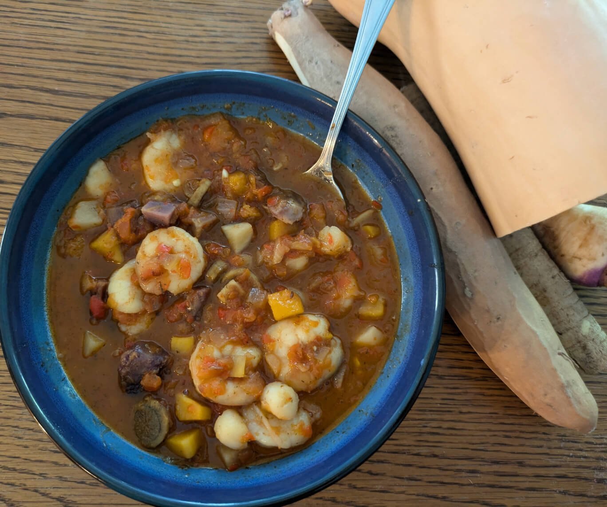

Rock’s Stew

Description
The best, hearty, savory seafood and vegetable stew you will ever try, made with love from a really big man. Perfect for bridgemen, it will provide you with all the protein and energy you need for a long day. And if you don’t like it, eat it anyways, you airsick lowlander.
Ingredients
- 6 red bell peppers
- 6 tbsp vegetable oil, divided
- 2 onions, diced
- 1 lb turnips
- 1 sweet potato
- 1 1/2 cups butternut squash cubes
- 12 inches burdock root
- 2 1/2 tsp salt, divided
- 1/2 lb small scallops
- 1 lb shrimp, peeled and deveined
- 1 medium dill pickle
- 2 tbsp lemon juice
- 1 tbsp oyster sauce
- 1 quart seafood stock
- 1/2 cup water
- 2 bay leaves
- 1/2 tsp allspice
- 1/2 tsp dill
- 1 tsp ground cumin
- 1 tsp caraway seeds
- 2 cloves garlic, minced
Steps
- Cut the peppers in half and remove stems and seeds. Place the peppers, cut sides down, on a baking sheet. Put the sheet on the highest rack in the oven and set to broil. Broil the peppers until the skins are mostly blackened. Remove from the oven and let cool 2 minutes. Place the peppers in a ziploc bag, seal, and set aside.
- While the peppers are broiling, put 1/4 cup vegetable oil in a stock pot over low heat. Add the onions and cook 45 minutes or until golden brown. You won't need to stir them very often at all.
- Once the peppers are in the bag and the onions are cooking, peel and chop the turnips, sweet potato, and squash into 1/2 to 3/4 inch cubes. Peel the burdock root and slice into thin rounds. Toss the vegetables with 2 tbsp vegetable oil and 1/2 tsp salt, then spread in a single layer on the baking sheet.
- Heat the oven to 425 degrees Fahrenheit, then return the baking sheet (with the vegetables on it) to the oven. Roast 20 minutes, stir the vegetables, and roast another 10 minutes. Remove from the oven and set aside.
- Remove the peppers from the bag and peel off and discard the skins. Place the peeled peppers in a food processor and process into a chunky liquid.
- Once the onions are golden brown, place the scallops in a single layer in the pot with the onions. Turn up the heat to medium and cook 2 minutes. Flip the scallops and cook until done. Remove the scallops from the pot, leaving the onions.
- Add the shrimp to the pot, cook and stir until cooked, then remove the shrimp, leaving the onions in the pot.
- Add the roasted vegetables to the pot. Mince the pickle, and add it to the pot, along with the lemon juice, processed peppers, oyster sauce, seafood stock, and 1/2 cup water. Add the bay leaves, allspice, dill, cumin, caraway seeds, 2 tsp salt, and garlic. Turn heat to medium high and bring to boil. Cover and reduce heat to simmer. Let simmer 10 minutes until vegetables are tender (burdock root will still have some crunch to it).
- Add the shrimp and scallops to the stew. Heat through, then remove bay leaves and serve.
Back to home page
Credits to jozomby for the recipes